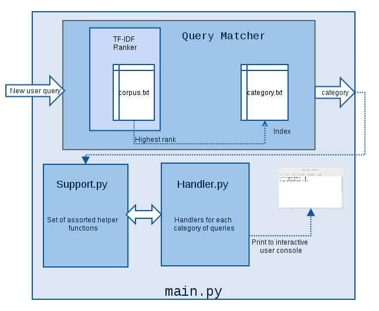

Small update on what we’ve done till now.
When a new query is fed in, two things may happen: 1. Either the query may be resolved, under pre-written categories. 2. Or the query is new, and an online lookup can be done.
First part
Using tf-idf ranking for text mining, the user query is mapped to a query in the database which is closest to it. This in turn, gives us a category to be fed to a handler. The handler, tries resolving the query by running commands and interacting with the user. Regular expressions are used to identify file and file-types wherever possible.
Second part
For weather related queries, a Named Entity Recognizer(NER) is used to identify a word as a location. Yahoo APIs are used to fetch the weather for a location. For more generic queries, NER and duckduckgo APIs are used as a fallback, to give results from the web. If this fails too, alex gives up.
Now how does the Query Matcher work?
It is an implementation of TF-IDF ranking (term frequency - inverse document frequency) for information retrieval and text mining.
- Each sentence in 'corpus.txt' acts as a document, and the processed words in each sentence act as terms.
- Frequently occurring stop-words are removed.
- Stemming is done on each word, i.e. reducing inflected or derived words to their word stem, base or root form.
-
A new user query undergoes tf-idf ranking, and the highest ranked sentence(document) is picked up and mapped to a category.
-
Term Frequency is the number of times each term t occurs in document d.
-
Inverse Document Frequency measures how much information the term provides, i.e. whether the term is common or rare across all documents. This is obtained by dividing the total number of documents, by the number of documents containing the term, and then taking the logarithm of that quotient.
A brief architecture of code structure

Things which didn’t work?
We were trying to make use of dependency parsing for a sentence. It basically parses a sentence after doing part of speech tagging, to identify the verb in the sentence, which would help identify the subject and the object. We weren't able to make judcious use of Stanford's corenlp parser. If the sentence is semantically correct, the object can be used to identify the category. But we’re not sure, if this would have performed better than tf-idf ranking.
Future prospects
- Short term
- Spelling correction using edit distance, and context specific spell correction.
- Error reporting, collecting non working queries.
- Long term
- Dependency parsing (Probabilistic Context Free Grammars).
- Add more relevant queries.
Comments
comments powered by Disqus